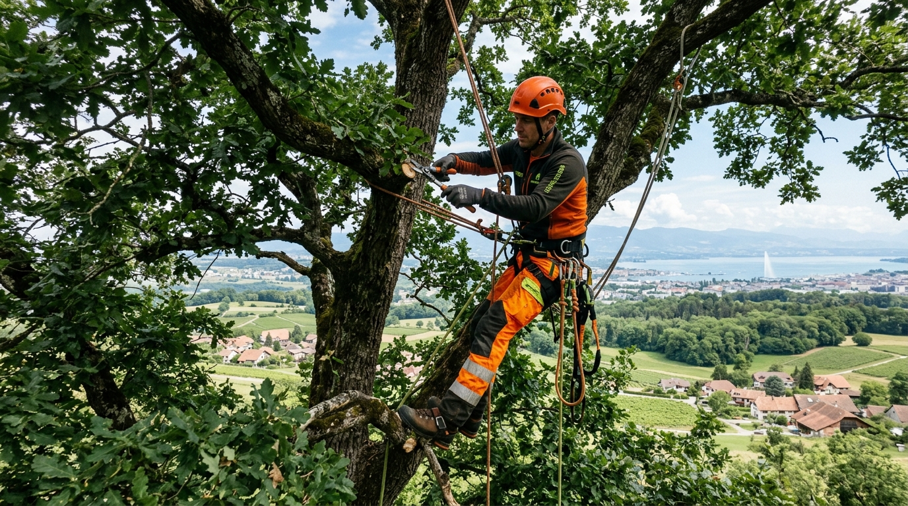
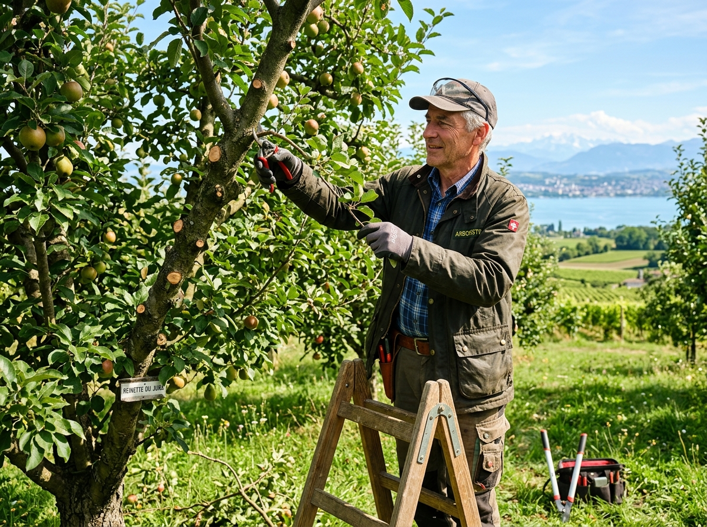
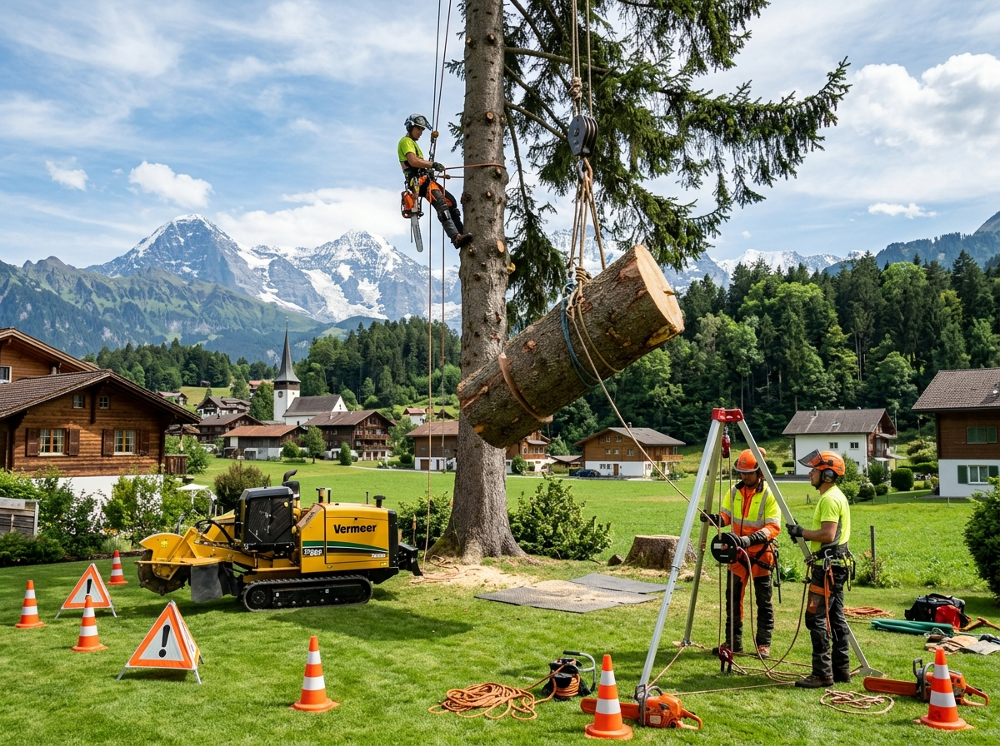
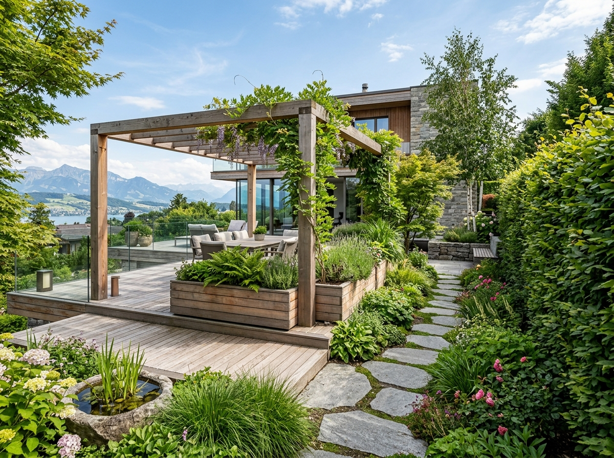
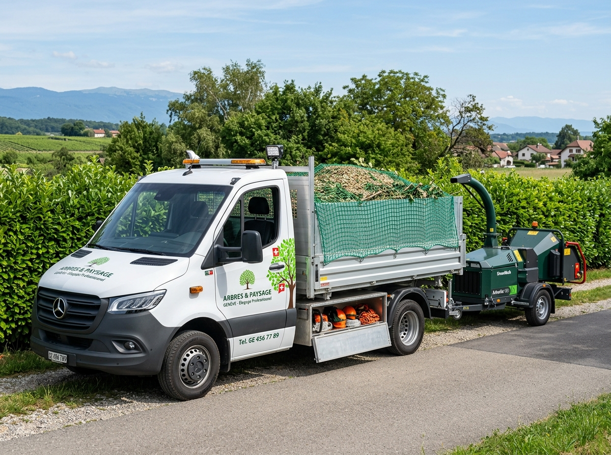
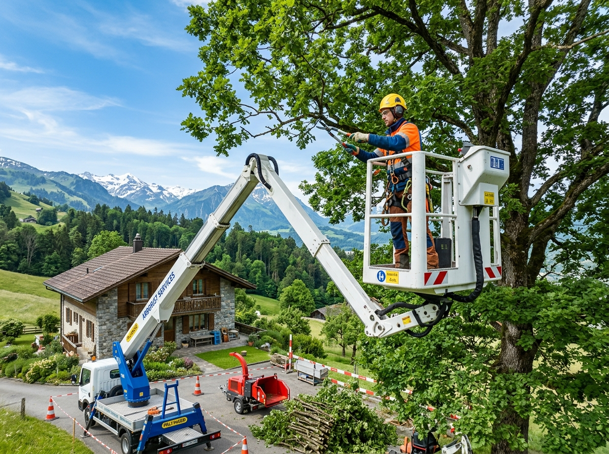

Spécialiste de l'élagage technique par grimpe et nacelle, de l'abattage délicat et de la valorisation de vos espaces arborés. Une approche respectueuse du végétal et de votre sécurité.
Que vous soyez propriétaire d'un jardin privé, gestionnaire d'un parc immobilier résidentiel ou responsable d'une entreprise, nous déployons les méthodes et les équipements adéquats.
Prendre soin de vos arbres d'ornement, vergers et haies tout en protégeant votre toiture, vos clôtures et la tranquillité de votre voisinage.
Gestion intégrale et préventive des espaces verts de copropriétés et résidences locatives à Genève et sur La Côte vaudoise.
Interventions sur sites industriels, parcs d'activités, voiries et domaines publics avec du matériel lourd et des protocoles de sécurité stricts.
De la cime des plus hauts cèdres aux aménagements bois de votre terrasse, découvrez le spectre complet des interventions menées par ASG Arbres Services Genève.
Taille raisonnée, taille sanitaire (suppression du bois mort), allègement de couronne et haubanage dynamique pour sécuriser vos arbres sans altérer leur physiologie naturelle.

ArboricultureOptimisation de la fructification, taille de formation des jeunes sujets, entretien saisonnier des haies vives et mise en valeur architecturale des arbustes de jardin.

Haute PrécisionDémontage minutieux au câble et par rétention au-dessus de bâtisses ou vérandas. Rognage mécanique des souches en profondeur pour replanter ou engazonner proprement.

Paysage & NatureCréation de terrasses en bois noble, pergolas, bacs de plantation, milieux naturels favorisant la biodiversité et plantation de haies vives indigènes.

Logistique ProVéhicules utilitaires adaptés, bennes de grande contenance et broyeur forestier pour une évacuation rapide et une valorisation des rémanents de coupe en paillage ou bois-énergie.

Accès TechniqueSolution idéale pour les arbres fragilisés ne permettant plus l'accès sur corde, ou pour les travaux d'envergure le long des façades, voies ferrées ou fils électriques.
Installée au cœur du vignoble genevois à Satigny, notre équipe combine amour sincère du vivant, rigueur technique suisse et équipements de pointe.
Tous nos chantiers répondent aux normes les plus rigoureuses de prévention des accidents. Chaque geste est calculé et sécurisé.
Nous proscrivons les coupes drastiques qui condamnent l'arbre. Notre rôle est de valoriser son port naturel et sa longévité.
Bendik Häuserman se déplace sur place pour apprécier la situation, évaluer l'accès et vous conseiller la meilleure démarche.
Rayonnement sur tout le canton de Genève, La Côte, Nyon, Morges et le canton de Vaud.